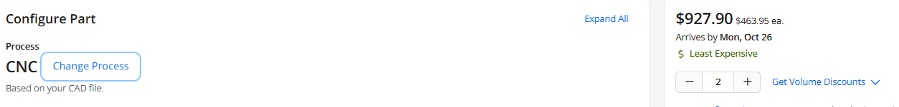
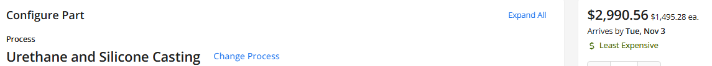
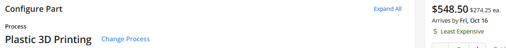
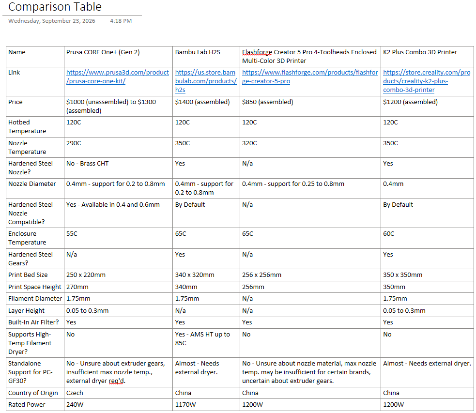
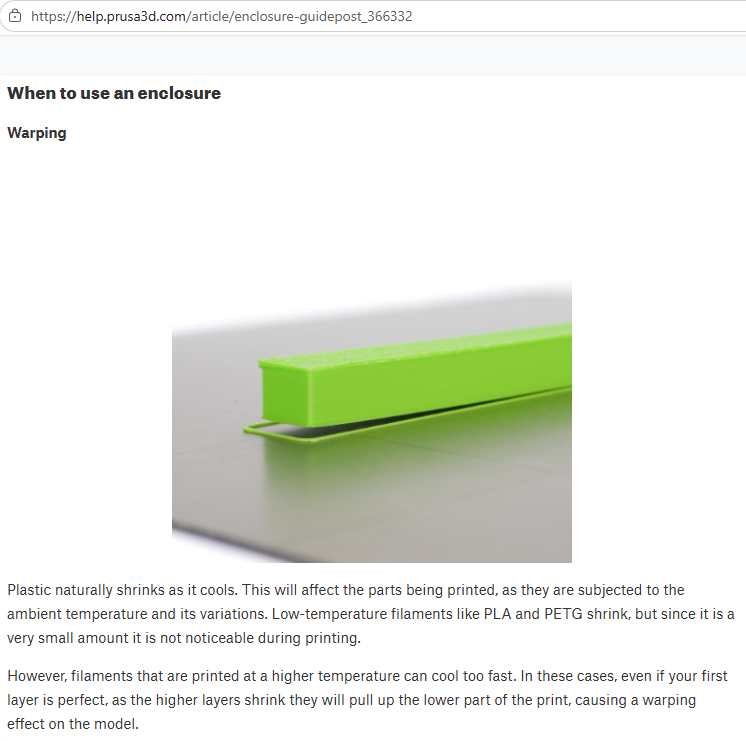

Opinion
Searching for a 3D Printer
If you read my last post you'd know I'm developing an enclosure as part of my thesis project. Enclosures are great - they keep adversarial events from destroying your security! Anyway, I don't have a 3D printer, CNC, or
manufacturing hardware lying around so my first approach to manufacturing this enclosure was to outsource it to someone else. I Google'd "3D printing companies" and stumbled across Xeometry.
They had a nice, easy to use, easy to get started UI.
One thing about my thesis is that I will be developing 2 security camera modules - 1) for use in testing indoor scenarios, and 2) for use in testing outdoor scenarios. The 2 units will use the same enclosure, raspbery pi model,
camera model, and software, but they will need different internal hardware to overcome their unique enviromental challenges. For this reason, I need 2 copies of my enclosure (to enable simultaneous testing). I haven't put much thot
into the materials I'd use but I heard PC-GF30 (polycarbonate plastic mixed with fiberglass) was a pretty good material. At one point Copilot told me this is what the Google Nest cameras were made of (not the best camera but a
competitive analysis is not a component of this post). But, I was still open to options. I got quotes for Xeometry for 3 different processes, each using different materials:



The CNC quote used aluminum - a strong material with great thermal properties. To be clear, I never intended to use aluminum, Xeometry just didn't let me select a different material. The casting quote used a PC-like material (not sure`
what "polycarbonate-like" actually means, but W.E.). And the 3D printing quote defaulted to ABS plastic (not ideal for outdoor use but an alright material) - the quote was so outrageously high I didn't bother switching to my intended material.
The first thing I had to come to terms with was that outsourcing was expensive, regardless of the process. Aluminum was nice, but having 2 copies of the case would have cost at least ~$1800. Casting usually is a good idea
because then you get a reusable cast that normally leads to shorter lead times and lower costs, but getting 2 copies would have cost at least ~$6000 - I could buy a soccer team with that much money! Last, 3D printing was
almost affordable, but with a cost ~$1000 I thought it might be in my best interest to buy my own 3D printer. Coming to this realization is how I arrive at this post!
Here's a table summarizing my search:

Something I expect readers to wonder is, "where did these printers come from, there's so many of them, how did these make the cut?" Here's my methodology. First, I picked brands I knew - that's how Prusa made it onto the
list. Then, I consulted Copilot for popular 3D printer brands - that's how the rest of the brands it onto the list.
Now, I have justified how the brands made it onto the list. Next, I picked a brand I recognized but knew nothing about to begin exploring. I did this because, in my experience shopping I've recognized that all normally have
product "tiers" and the product in a specific "tier" is normally priced competitively compared to another product in the equivalent "tier" from another brand. So, if I explored the Bambu brand I could expect to find 3D
printers at different price points, then I could use those price points to find the equivalent "tiered" printer from anothe brand. By identifying the price point of a "tier" from a single brand I save myself from analysing
all of the printers for all of the brands. I chose the Bambu brand becuase they are the brand that my local public library has available for rent.
Exploring Bambu was great! They had many options that I enjoyed looking at. If I didn't know what I was looking for I'd've thot they were all great printers. Fortunately, that was not the case - I knew what I was
looking for. I knew what I was looking for because I knew (or thot I knew) I wanted to print PC-GF30 (polycarbonate-fiberglass 70/30). PC-GF30 has a few unique properties that make it an advanced material to print.
Specifically, the roll of filament sold by Forward-am requires
the printer nozzle temperature to be between 280 and 330 degrees celsius, the bed temperature to be between 80 and 100 degrees celsius, and (altho not explicitly stated in the printing guidelines) a hardened nozzle
(normally hardened steel) + filtered enclosure. Thanks to these requirements/guidelines I could eliminate every entry level printer because entry level printers cannot achieve the required temperatures. This left me with only mid-tier
printers that were characterized by a price point near $1000.
The Bambu model that achived these requirements was the H2S ($1400), the Flashforge model was the Creator 5 Pro ($850), the Creality model was the K2 Plus ($1200), and the Prusa model was the One+ (Gen 2) (note, these models
don't all achieve the guidelines but they are in the same price tier as the Bambu model). All 4 models achieved the hotbed temperature (all achieved 120C). Only 2 models achieved the required nozzle temperature (the Bambu
and the Creality), the Prusa model capped at 290C (they have a $200 hotend upgrade that does achieve this but is currently sold out) and the Flashforge model caps at 320C which is 10C less than the max suggested temperature
(which led me to believe this might be unreliable in practice). Only 2 printers came with a hardened steel nozzle by default (I could not find what the Flashforge nozzle was made of) and 3 of the 4 brands sold compatible
hardened steel nozzles (again, could not verify the material of the falshforge nozzles) - therefore, all brands except for the Flashforge modle could still be considered. All brands provided 0.6 and 0.8mm nozzles. The
enclosure temperature is not specified by the guidelines, but I know that having a higher enclosure temperature helps with printing this material, thankfully all printers have an actively heated chamber.

Next, I could not verify what type of gears the Flashforge brand used in its printers, but I could verify that all other printers have hardened steel extruder gears (the table shows that I could not verify this for the Prusa
printer but I did verify this after). The prusa has the smalles printbed of the printers that still serve as viable candidates, the Bambu and K2 have much larger bed sizes tho and are much taller (thus, have greater volume).
All remaining printers by defualt support 1.75mm diameter filament - this is only useful when buying filaments, it means I can only buy filaments of this size. The layer height was only available for 2 printer, but this is not a very useful characteristic because the print layer height changes based on the nozzle
being used. All printers have support for some sort of advanced filtration system which is nice because PC-GF30, as well as other engineered filaments, release toxic fumes. Here is a stat that stood out - only the H2S
supports having a filament drying attached to it! Unfortunately, the most powerful dryer that the H2S supports can dry up to 85C, but PC-GF30 needs to be dried at 90C (maybe, might depend on brand). It may be possible to
dry it anyway but it would take several hours longer to dry at such a low temperature. PC-GF30 is highly hygroscopic (absorbs moisture) so drying it is almost a necessity. If it is not properly dried and store before use, it will lead to stringy
extrusion, blobs forming at the nozzle tip, and other undesired things.
Technically speaking, no printer supports PC-GF30 - they all need something extra. This meant that no matter which printer I chose, I'd need something extra - the prusa needs a hotend upgrade and a drying, the other Bambu
potentially needs a stronger dryer, the K2 pro needs an external dryer. I was in a loss-loss situation. The last important fact is the rated power supply. Now, I don't know much about power supplies but seeing >1000W on
the data sheets for the printers threw me off pretty hard. The rated power supply is actually what made me side with the Prusa over the others. The Prusa is rated at 240W, much less than the others. I thot, if these other
guys are consuming this much power there has to be something wrong. That, in addition to the way the Prusa business is ran (warehouses stocked with replacement parts for decades) also made me lean towards prusa. That's why
I chose to buy the Prusa. Now, I still had an issue, I need to print the enclosure and I can't get a hotend upgrade - what do I do!? The answer - use a different material. Instead of printing with PC-GF30 (a highly advanced
filament to print) I've decided to print with ASA - a still highly suitable plastic for my application that produces less toxic fumes, is cheaper, and is easier to print (tho, it is stil significantly more complex to print
than PLA). That's why I decided to get the Prusa printer!